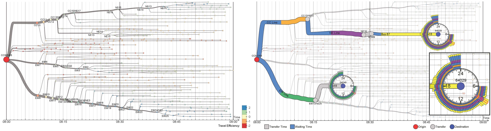
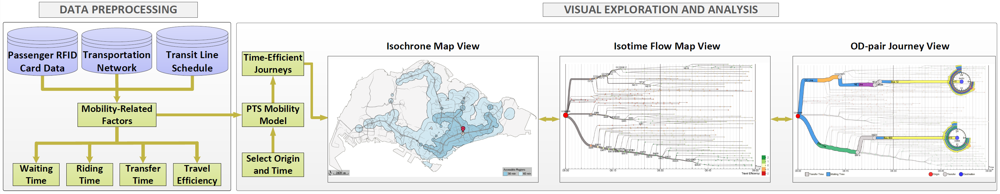
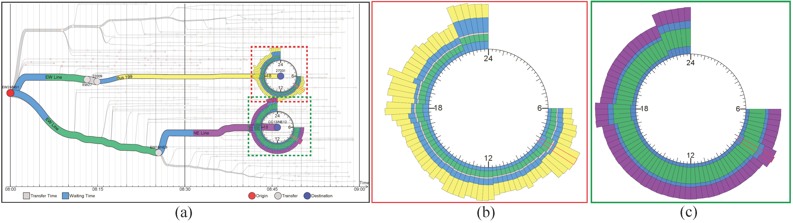

Public transportation systems (PTSs) play an important role in modern cities, providing shared/massive transportation services that are essential for the general public. However, due to their increasing complexity, designing effective methods to visualize and explore PTS is highly challenging. Most existing techniques employ network visualization methods and focus on showing the network topology across stops while ignoring various mobility-related factors such as riding time, transfer time, waiting time, and round-the-clock patterns. This work aims to visualize and explore passenger mobility in a PTS with a family of analytical tasks based on inputs from transportation researchers. After exploring different design alternatives, we come up with an integrated solution with three visualization modules: isochrone map view for geographical information, isotime flow map view for effective temporal information comparison and manipulation, and OD-pair journey view for detailed visual analysis of mobility factors along routes between specific origin-destination pairs. The isotime flow map linearizes a flow map into a parallel isoline representation, maximizing the visualization of mobility information along the horizontal time axis while presenting clear and smooth pathways from origin to destinations. Moreover, we devise several interactive visual query methods for users to easily explore the dynamics of PTS mobility over space and time. Lastly, we also construct a PTS mobility model from millions of real passenger trajectories, and evaluate our visualization techniques with assorted case studies with the transportation researchers.



If you find this paper useful, please consider citing it.
@article{zeng2014visualizing,
author = {Wei Zeng and Chi-Wing Fu and Stefan M{"u}ller Arisona and Alexander Erath and Huamin Qu},
title = {{Visualizing Mobility of Public Transportation System}},
journal = {IEEE Transactions on Visualization and Computer Graphics},
volume = {20},
number = {12},
pages = {1833--1842},
year = {2014},
doi = {10.1109/TVCG.2014.2346893},
}